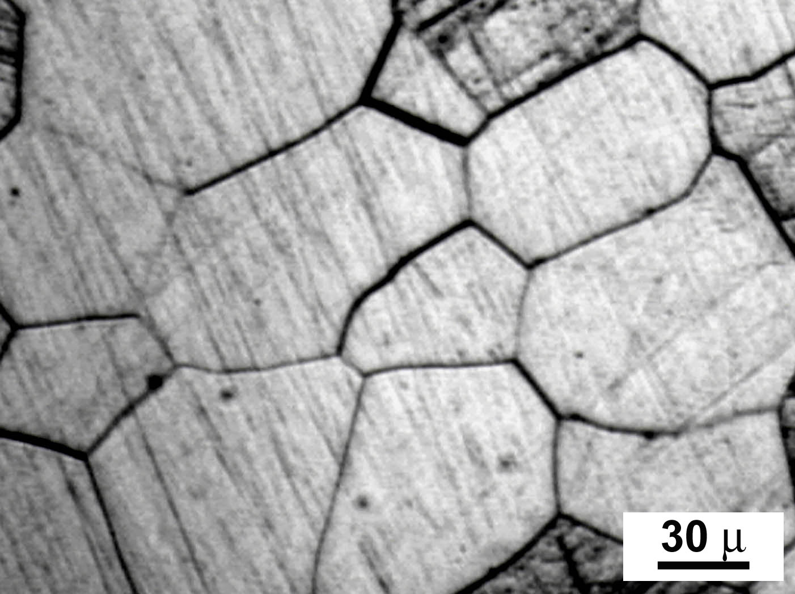

Data Compaction for Metal Microstructures

I wrote my honors thesis on microstructure data compaction. Microstructure sensitive finite element analysis (FEA) has become much more common as we seek to understand how the texture (think of the metal crystals with their sizes and orientations) evolves through metal forming. I found an effective way to reduce the dimensionality of the texture by creating an “optimally spanning” data set and weighting its members for optimal fit compared to the original data set.
Background
Metal forming is used to change the mechanical properties of a metal through plastic (non-reversible) deformation. Oftentimes, processes like cold rolling, milling, stamping, forging, etc. are used not only to achieve the desired shape, but also the desired strength. Desirable traits could be stiffness, high fatigue strength, flexibility, or other application specific characteristics. Microstructure Sensitive Design (MSD) is the process by which you achieve material properties by a sequence of forming operations. Unfortunately, metal forming simulations that account for and keep track of the microstructure are extremely computationally expensive, so typically, simulations are run on extremely small “samples”. My project was to see how much the microstructure data could be reduced while maintaining sufficient simulation accuracy.
Methodology
The main idea was to transform the microstructure data (gathered through X-ray diffraction) expressed as Euler angles to Fourier coefficients using Generalized Spherical Harmonics (GSH) because we can describe any distribution of orientations, denoted f(g) (with g being the orientations) as a Fourier series
f(g)=\sum\limits_{\ell=0}^{\infty}\sum\limits_{\mu=0}^{M(\ell)} \sum\limits_{\nu=0}^{N(\ell)} F_{\mu\nu}^{\ell}P_{\mu\nu}^{\ell}
where F_{\mu\nu}^{\ell} are Fourier coefficients and P_{\mu\nu}^{\ell} are the Legendre polynomials. If we express each orientation as a vector of Fourier coefficients, we can exploit the linearity of the Fourier space. We can compute the sample mean of the set of coefficients and we can create an optimization problem to choose weights of a judiciously chosen list of orientations (More details in the paper) using Fourier coefficients to match the original vector.
Results
This method was used on several different data sets, including copper, zinc (at different temperatures), and aluminum. I found that I was able to reduce the data set size by several orders of magnitude. Using this methodology, I found that for cubic metals, 825 orientations were required for good simulation performance and for hexagonal metals, 1600 orientations were required.
For more detailed description of the methodology, see my publications.